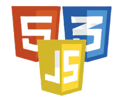

Skill

Nível Médio

Nível Médio
Nível Médio

Cursando

Cursando

Moro em Sorocaba, Sou formada como Técnico em Informática
pela ETEC Fernando Prestes.
Tenho curso na aréa de Hardware voltado para manutenções
em PC's e notebooks.
Atualmente estou cursando (ADS) Análise e desenvolvimento de
sistemas pela Fatec Sorocaba.
Gosto principalmente da área de back-end.
Veja alguns de meus certificados
Abaixo: